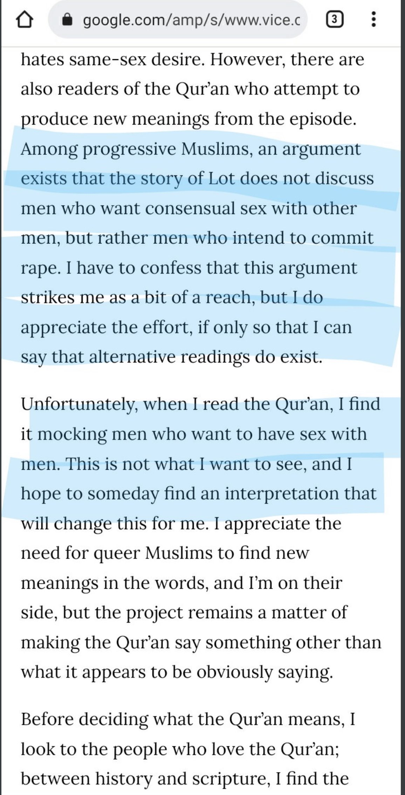
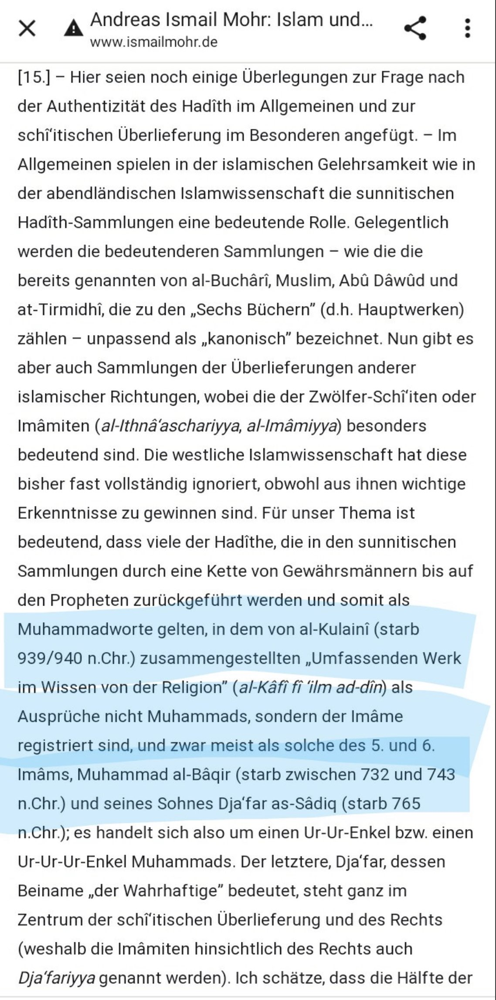
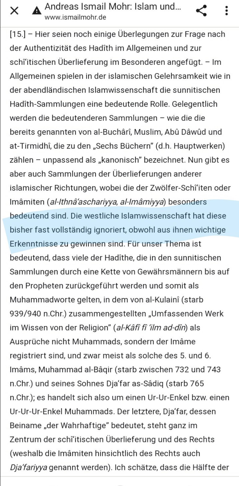
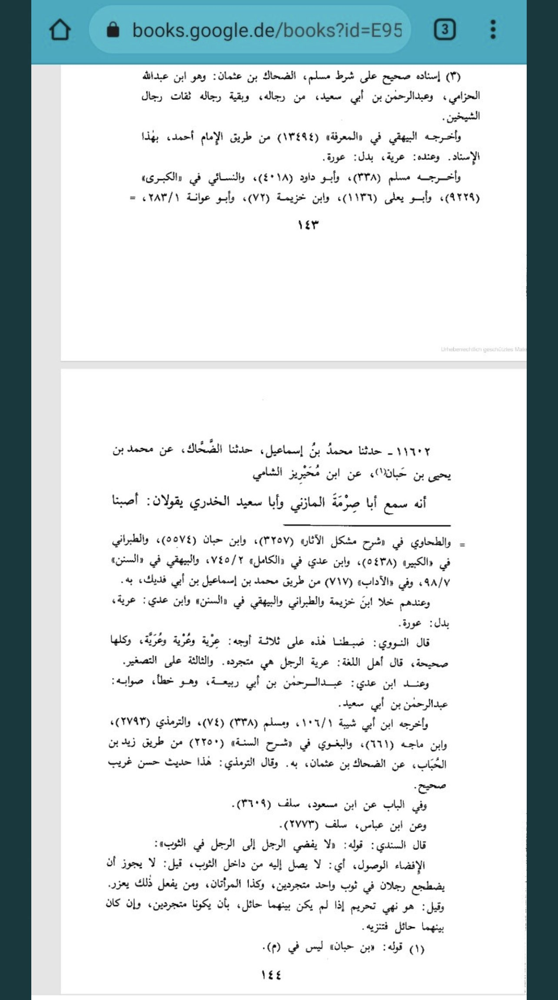
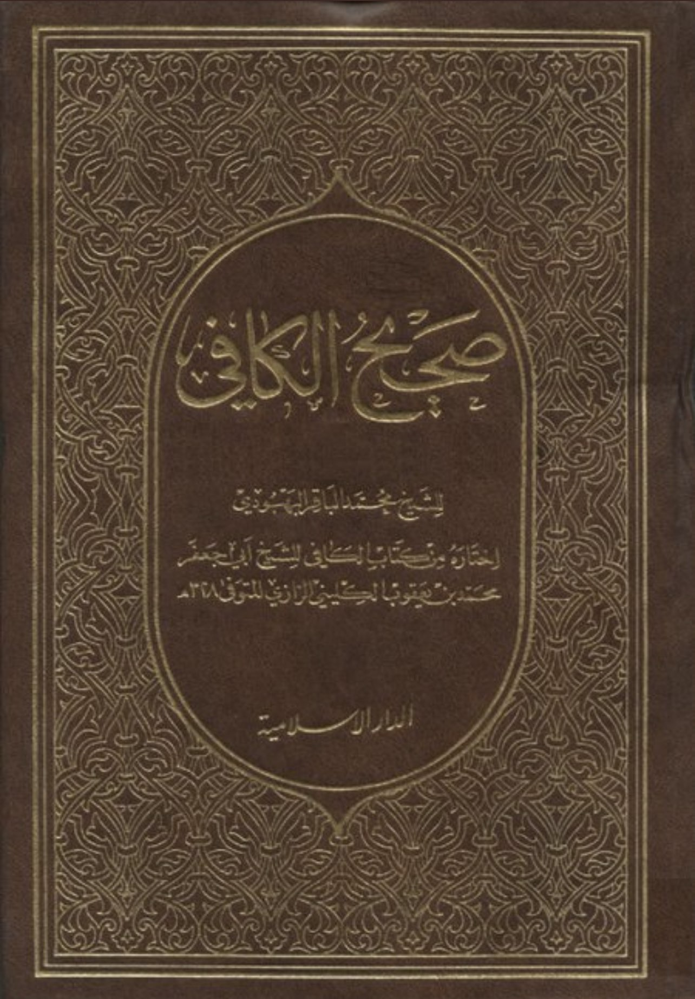
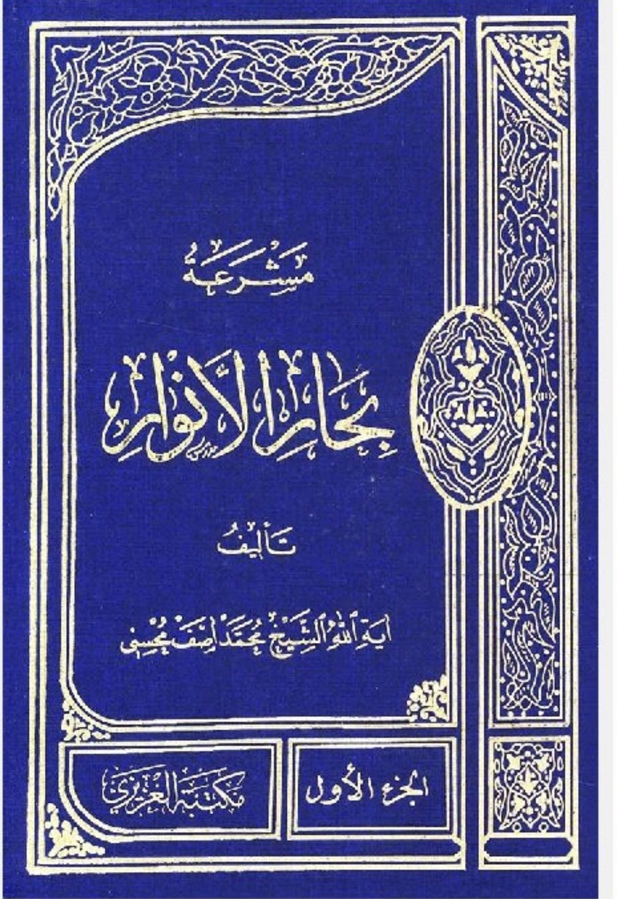
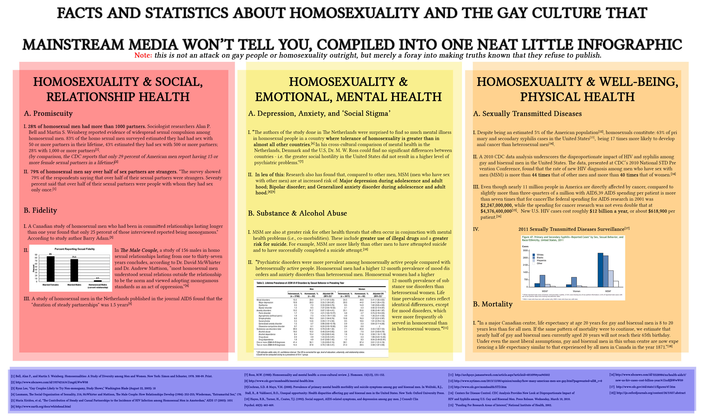
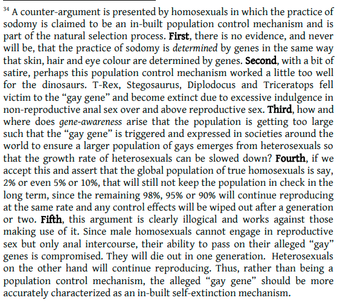

Debunking the claim that Islam and homosexuality are compatible
Andreas Ismail Mohr is a German professor of Islam in Munich. He wrote an article trying to reconcile Islam with homomsexual behaviour.
But, Mohr does not care about the reasons because of Islam and every major civilization bans homosexuality.
He just criticises all classical Qur'an commentators and scholars and he throws in 5 unreferenced claims why the classical interpretation "must" be wrong.
Mohr uses the usual "arguments" of modernists which have been refuted countless times: muslimmatters.org/2016/07/11/can…
Read also: themaydan.com/2018/07/can-is…
Even modernists like Dr. Muhammad Knight admitted the flawed nature of these "arguments" (see: screenshot)

So, we will deal with the points Mohr raises against the Ahadith.
He claims, the Ahadith where the Prophet condemns homosexuality were forged. They were taken from Shia hadith books. The chains go back to the 6th Shia imam but the Muslims arbitrarily prolonged the chains and attributed them to the Prophet.

As it is generally the case with revisionists, he does NOT give specific examples nor evidence of that "forging". He only quotes the orientalist Joseph Schact, whose conspiracy theories about Hadith Science have been refuted extensively by Professor Mustafa al Azami. If u do not have time to read his multiple books,take this article drive.google.com/file/d/1vSFYG4…
Mohr quotes out-dated conspiracy theories and claims, how western scholarship has ignored the Shia hadith corpus

Well, Mr. Mohr, there are multiple reasons for that:
Firstly, the shia developed an own Hadith Literature centuries after the Muslims. The Shia hadith collections that you quote were written centuries after the Muslim ones
So, Muslim Hadith Corpus predates Shia by centuries
Consider this Hadith:sunnah.com/muslim:338a
Prophet even bans looking at private parts of people of same sex,(let alone intercourse!)
This hadith was recorded by 16 Hadith Experts from different epochs,different parts of the Islamic Caliphate,from the 2nd till the 5th century consistently, and each scholar reports this quote/hadith with a chain of transmitters that traces back to the Prophet saws
These scholars like Ibn Abi Shayba, Ibn Hanbal, Sana'ani have lived 300 years before the shia "hadith" scholar you quote were even born.

Here another Hadith: sunnah.com/tirmidhi:1456
This Hadith was recorded by 14 Hadith Experts consistently with their own chains, from early times like Ibn Hanbal's until Baghawi's.
Hence, claiming that Muslims were taking from Shias is preposterous and anachronistic.
Since Shia "hadith" science appeared just centuries later, shia books are filled with long chains with many anonymous narrators and even forgers.
Read these books of Ayatollah Bahbudi and Grand Ayatollah Asif Muhsini (see pictures):


Secondly,all these quoted narrations are NOT found in the Shia hadith corpus.Even if they were,it would be anachronistic that Muslims "took" Ahadith from Shias
Beware of secularist academia.Their phds and diplomas are worthless in light of the genius 'Ulama that Islam brought up.
———
Quranic Verses That Clearly Go Against LGBT
1.)
“If two men among you are guilty of lewdness, punish them both. If they repent and amend, Leave them alone; for Allah is Oft-returning, Most Merciful.”
(Quran 4:16)
2.)
“And [We had sent] Lot when he said to his people, "Do you commit such immorality as no one has preceded you with from among the worlds? Indeed, you approach men with desire, instead of women. Rather, you are a transgressing people." But the answer of his people was only that they said, "Evict them from your city! Indeed, they are men who keep themselves pure." So We saved him and his family, except for his wife; she was of those who remained [with the evildoers]. And We rained upon them a rain [of stones]. Then see how was the end of the criminals.”
(Quran 7:80-84)
——
3.)
“And they who guard their private parts. Except from their wives or those their right hands possess, for indeed, they will not be blamed -But whoever seeks beyond that, then those are the transgressors.”
(Quran 23:5-7)
4.)
“The people of Lot rejected the messengers when their brother Lot said to them, “Will you not fear ˹Allah˺? I am truly a trustworthy messenger to you. So fear Allah, and obey me. I do not ask you for any reward for this ˹message˺. My reward is only from the Lord of all worlds. Why do you ˹men˺ lust after fellow men, leaving the wives that your Lord has created for you? In fact, you are a transgressing people.”They threatened, “If you do not desist, O Lot, you will surely be expelled.” Lot responded, “I am truly one of those who despise your ˹shameful˺ practice. My Lord! Save me and my family from ˹the consequences of˺ what they do.” So We saved him and all of his family, except an old woman, who was one of the doomed. Then We utterly destroyed the rest, pouring upon them a rain ˹of brimstone˺. How evil was the rain of those who had been warned! Surely in this is a sign. Yet most of them would not believe. And your Lord is certainly the Almighty, Most Merciful.”
(Quran 26:160-175)
——
5.)
“And [mention] Lot, when he said to his people, "Do you commit immorality while you are seeing? Do you indeed approach men with desire instead of women? Rather, you are a people behaving ignorantly."But the answer of his people was not except that they said, "Expel the family of Lot from your city. Indeed, they are people who keep themselves pure." So We saved him and his family, except for his wife; We destined her to be of those who remained behind. And We rained upon them a rain [of stones], and evil was the rain of those who were warned.”
(Quran 27:54-58)
6.)
“And [mention] Lot, when he said to his people, "Indeed, you commit such immorality as no one has preceded you with from among the worlds. Indeed, you approach men and obstruct the road and commit in your meetings [every] evil." And the answer of his people was not but they said, "Bring us the punishment of Allah , if you should be of the truthful." He said, "My Lord, support me against the corrupting people." And when Our messengers came to Abraham with the good tidings, they said, "Indeed, we will destroy the people of that Lot's city. Indeed, its people have been wrongdoers."[Abraham] said, "Indeed, within it is Lot." They said, "We are more knowing of who is within it. We will surely save him and his family, except his wife. She is to be of those who remain behind." And when Our messengers came to Lot, he was distressed for them and felt for them great discomfort. They said, "Fear not, nor grieve. Indeed, we will save you and your family, except your wife; she is to be of those who remain behind. Indeed, we will bring down on the people of this city punishment from the sky because they have been defiantly disobedient." And We have certainly left of it a sign as clear evidence for a people who use reason.”
(Quran 29:28-35)
Hadiths That Clearly Go Against LGBT
1.)
Narrated Ibn 'Abbas:
“That the Messenger of Allah (ﷺ) said: "Whomever you find doing the actions of the people of Lut then kill the one doing it, and the one it is done to."
Sources: Jami at-Tirmidhi 1456, Sunan Ibn Majah 2561, and Mishkat al-Masabih 3575
2.)
Ibn 'Abbas (ra) narrated that the Messenger of Allah (ﷺ) said:
"Whoever you find doing as the people of Lot did (i.e. homosexuality), kill the one who does it and the one to whom it is done, and if you find anyone having sexual intercourse with animal, kill him and kill the animal." Related by Ahmad and the four Imams with a trustworthy chain of narrators.
Source: Bulugh al-Maram
3.)
Narrated Ibn Abbas:
“The Prophet (ﷺ) cursed effeminate men (those men who are in the similitude (assume the manners of women) and those women who assume the manners of men, and he said, "Turn them out of your houses ." The Prophet (ﷺ) turned out such-and-such man, and `Umar turned out such-and-such woman.”
Source: Sahih al-Bukhari 5886
4.)
Narrated AbuHurayrah:
“The Messenger of Allah (ﷺ) cursed the man who dressed like a woman and the woman who dressed like a man.”
Source: Sunan Abi Dawud 4098
5.)
Abd al-Rahman, the son of Abu Sa'id al-Khudri, reported from his father:
“The Messenger of Allah (ﷺ) said: A man should not see the private parts of another man, and a woman should not see the private parts of another woman, and a man should not lie with another man under one covering, and a woman should not lie with another woman under one covering.”
Source: Sahih Muslim 338 a
6.)
It was narrated from Abu Hurairah that the Prophet (ﷺ) said concerning those who do the action of the people of Lut:
“Stone the upper and the lower, stone them both.”
Source: Sunan Ibn Majah 2562
7.)
“Ibn Abbas and Abu Huraira reported God's messenger as saying, 'Accursed is he who does what Lot's people did.' In a version...on the authority of Ibn Abbas it says that Ali [Muhammad's cousin and son-in-law] had two people “burned” and that Abu Bakr [Muhammad's chief companion] had a wall thrown down on them.”
Source: Mishkat, vol. 1, p. 765, Prescribed Punishments
What Classical Islamic Scholars Have Said About Homosexuality
1.) Al Jalalayn
“And when two of you (read wa’lladhāni or wa’lladhānni) men, commit it, that is, a lewd act, adultery or homosexual intercourse, punish them both, with insults and beatings with sandals; but if they repent, of this [lewd act], and make amends, through [good] action, then leave them be, and do not harm them. God ever turns [relenting], to those who repent, and is Merciful, to them. This [verse] is abrogated by the prescribed punishment if adultery is meant [by the lewd act], and similarly if homosexual intercourse is meant, according to al-Shāfi‘ī; but according to him, the person who is the object of the [penetrative] act is not stoned, even if he be married; rather, he is flogged and banished. Judging by the dual person pronoun, it seems more obvious that homosexual fornication is meant [by this verse], even though the former [sc. al-Shāfi‘ī] was of the opinion that it referred to an adulterer and an adulteress; but this [opinion of his] may be countered by the fact that [the reference to] the two [men] becomes clear on account of the particle min being attached to a masculine pronoun [minkum, ‘of you’], and by the fact that they suffer the same punishment, [both effect the action of] repentance and [are both granted] that they be left alone [thereafter], [all of] which applies specifically to men, given that for women detention is stipulated, as was stated before.”
(Feras Hamza (trans.), Royal Aal al-Bayt Institute for Islamic Thought, Tafsir al-Jalalayn.)
2.) Ibn Kathir
[وَاللَّذَانَ يَأْتِيَـنِهَا مِنكُمْ فَـَاذُوهُمَا]
(And the two persons among you who commit illegal sexual intercourse, punish them both. [Qur'an 4:16]) Ibn Abbas and Said bin Jubayr said that this punishment includes cursing, shaming them and beating them with sandals. This was the ruling until Allah abrogated it with flogging or stoning, as we stated. Mujahid said, "It was revealed about the case of two men who do it." As if he was referring to the actions of the people of Lut, and Allah knows best. The collectors of Sunan recorded that Ibn `Abbas said that the Messenger of Allah said,
«مَنْ رَأَيْتُمُوهُ يَعْمَلُ عَمَلَ قَوْمِ لُوطٍ، فَاقْتُلُوا الْفَاعِلَ وَالْمَفْعُولَ بِه»
(Whoever you catch committing the act of the people of Lut (homosexuality), then kill both parties to the act.)
"The Adulteress is Confined in her House; A Command Later Abrogated"
[أَتَأْتُونَ الْفَـحِشَةَ مَا سَبَقَكُمْ بِهَا مِنْ أَحَدٍ مِّن الْعَـلَمِينَ]
إِنَّكُمْ لَتَأْتُونَ الرّجَالَ شَهْوَةً مّن دُونِ النّسَآء]
("Do you commit lewdness such as none preceding you has committed in all of the nations Verily, you practice your lusts on men instead of women.") meaning, you left women whom Allah created for you and instead had sex with men Indeed, this behavior is evil and ignorant because you have placed things in their improper places.
Source: Tafsir Ibn Kathir
3.) Ibn Al-Qayyim
“Both of them – fornication and homosexuality – involve immorality that goes against the wisdom of Allaah’s creation and commandment. For homosexuality involves innumerable evil and harms, and the one to whom it is done would be better off being killed than having this done to him, because after that he will become so evil and so corrupt that there can be no hope of his being reformed, and all good is lost for him, and he will no longer feel any shame before Allaah or before His creation. The semen of the one who did that to him will act as a poison on his body and soul. The scholars differed as to whether the one to whom it is done will ever enter Paradise. There are two opinions which I heard Shaykh al-Islam (may Allaah have mercy on him) narrate.”
Source: Ibn al-Qayyim: Ad-Dā'i wa Dawā, p. 115
FACTS:
Homosexuals are more likely to be mentally ill than heterosexuals
http://www.ncbi.nlm.nih.gov/pmc/articles/PMC2072932
In men, 46% of homosexuals report being molested, whilst only 7% of heterosexuals report it
http://www.ncbi.nlm.nih.gov/pubmed/11501300
24-90% of lesbians report being psychologically abused by their partner
https://mainweb-v.musc.edu/vawprevention/lesbianrx/factsheet.shtml
In men, homosexuals are 6 times more likely to commit suicide, 12 times more likely to use amphetamines, 10 times more likely to use heroin, and 2-3 times more likely to abuse alcohol than heterosexuals
http://www.amazon.com/Unequal-Opportunity-Disparities-Affecting-Bisexual/dp/0195301536
In men, homosexuals are 60 times more likely to have HIV than heterosexuals
http://www.ncbi.nlm.nih.gov/pmc/articles/PMC3462414
In women, up to 50% of homosexuals have reported sexual abuse
http://www.ncbi.nlm.nih.gov/pubmed/9360290
In men, only 4.5% of homosexuals are faithful to their partners, whilst 75% of heterosexuals are. Also, most ""long-term" relationships between homosexuals last less than 8 years. And last but not least, 83% of homosexuals in "steady" relationships have had frequent affairs in the last year
https://web.archive.org/web/2017056092559/https://advindicate.com/articles/3022
Being gay can reduce one's lifespan up to 20 years, whilst smoking only reduces it up to 10 years. Meaning that being gay is worse than being a smoker!
https://www.lifesitenews.com/news/yet-another-study-confirms-gay-life-expectancy-20-years-shorter
https://www.reference.com/science/average-lifespan-smoker-8d0edfbcaa32786a

“My Genes Made me do it!” Homosexuality & the Scientific Evidence: https://www.mygenes.co.nz/index.html
Facts and Statistics about homosexuality and the gay culture: https://i.imgur.com/fGdAqBX.png
Statistics related to LGBT/Homosexuality: https://twitter.com/DevonShapiro/status/1090041747416190977
Changing from homosexual to heterosexual is possible: https://pubmed.ncbi.nlm.nih.gov/14567650/
Homosexuals are more likely to commit incest: https://pubmed.ncbi.nlm.nih.gov/7667476/
Higher rates of HIV among homosexual men: https://pubmed.ncbi.nlm.nih.gov/17019372/
There is not a single “Gay gene”, Genes are not as vital: https://science.sciencemag.org/content/365/6456/869
Statistics on the STD’s of homosexuals: https://archive.is/7WMRl
Gay men are x17 times more likely to get anal cancer: https://www.cdc.gov/msmhealth/STD.htm
Thread on Rectums and the dangers of anal intercourse: https://twitter.com/_Halaby/status/1283810109471285248
Health risks of homosexuals are higher: https://jamanetwork.com/journals/jamainternalmedicine/fullarticle/2530417
Transsexuals who undergo SRS are more likely to commit suicide: https://journals.plos.org/plosone/article?id=10.1371/journal.pone.0016885
Transgenders are 49 times more likely to contract HIV than the general population: https://news.yahoo.com/one-group-people-acquiring-hiv-204557712.html
Transgenders More Likely than others To Develop Depression And Anxiety. http://www.medicaldaily.com/transgender-people-more-likely-develop-depression-and-anxiety-247044
Gay and Transgender Youth Homelessness by the Numbers (Statistics of LGBT compared to heterosexuals) https://archive.is/oaHQo
Gay men, who are 1.65% of the US population, account for 63% of the country’s syphilis cases. Source: http://takimag.com/article/the_straight_dope_on_homosexuality_elizabeth_mccaw/print
In 2010, homosexuals were about 200 times more likely than everyone else to be diagnosed with HIV. Source: http://takimag.com/article/the_straight_dope_on_homosexuality_elizabeth_mccaw/print
One in eight gay men in London has HIV. Source: http://www.pinknews.co.uk/2014/11/18/13-of-gay-and-bisexual-men-in-london-living-with-hiv/
Up to 50% of lesbians have reported sexual abuse. Source: http://www.ncbi.nlm.nih.gov/pubmed/9360290
Gay men are 12x more likely to use amphetamines than straight men. Source: http://www.amazon.com/Unequal-Opportunity-Disparities-Affecting-Bisexual/dp/0195301536
1/4 gay men in America have had over 1000 sex partners. Source: http://www.amazon.com/Homosexualities-Study-Diversity-Among-Women/dp/0671251503
https://m.youtube.com/watch?v=VEwkF8rThSY
